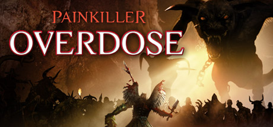

Сюжет игры излагается посредством роликов, в которых показывается некая книга с описанием и изображениями событий, которые озвучивает голос протагониста. Судя по всему, действия в «Painkiller: Передозировка» разворачиваются одновременно с действиями «Painkiller: Битва за пределами ада».
В конце видеоигры «Painkiller: Крещёный кровью» Дэниэл Гарнер уничтожает Люцифера. Однако это имеет одно непредвиденное последствие. За много тысячелетий до событий игры противоестественный союз ангела и демонессы породил уникальное существо — полуангела-полудемона Белиала. Это существо обладало искусством создания порталов и управления временем. Однако оно было слишком могущественно. Оно происходило из обоих миров и не принадлежало ни к одному из них. Оно стало слишком сильным и начало представлять угрозу. Тогда Рай и Ад заключили договор. Люцифер послал своего лучшего слугу — Цербера, чтобы тот сразил Белиала. А архангел Самаэль наблюдал за тем, чтобы договор был исполнен. Цербер одолел Белиала и оторвал ему крылья. Но Белиала не стали убивать, ведь способности Хранителя Порталов ещё могли пригодиться. Его поместили в отдалённую часть Чистилища, в волшебную клетку, закрытую на замок, запертый жизнью самого Люцифера. Белиал находился в заточении много тысяч лет, однако в момент смерти Люцифера клетка разрушилась и Белиал вырвался на свободу. Одержимый жаждой мести, он решает найти тех, кто был ответственен за его заточение — Цербера и Самаэля. После того, как он выбрался из темницы, одолев стража Чёрной Башни, он находит Цербера в некоем скандинавском месте Чистилища. До этого он находит на Астероидах обломок Меча Шивы и убивает им Цербера. Затем он пробивается к Самаэлю, побеждает его, но не убивает, а только отрубает ему всё тем же обломком Меча Шивы крылья, то есть делает с ним то же, что когда-то сделали с ним. Игра заканчивается словами Белиала: «Я должен бы радоваться, но всё… Как-то не так… Кто-то помог мне выбраться… Где же он?» Это служит сюжетным мостиком к продолжению и аддону Painkiller: Redemption.
Видеоигра «Painkiller: Передозировка» была весьма неоднозначно встречена критикой. Некоторые редакторы ведущих российских журналов о видеоиграх хвалили её, отмечая в качестве достоинств бережное отношение к оригиналу и большое количество креативных идей, другие, наоборот, всячески ругали игру, указывая в качестве минусов несбалансированную сложность и непродуманный баланс оружия, а некоторые и вовсе назвали выход «Painkiller: Передозировка» провалом. Однако выход в свет следующих трёх ещё более провальных частей игры — «Painkiller: Воскрешение», «Painkiller: Искупление» и «Painkiller: Абсолютное зло» заставил игроков и рецензентов изменить своё мнение о «Painkiller: Передозировка» в лучшую сторону.
Редакторы ведущего российского журнала о видеоиграх «Игромания» поставили игре оценку «6.0». В качестве плюсов рецензенты отметили низкие системные требования.
Редакторов ведущего российского онлайн-портала о видеоиграх «AG» поставили игре оценку «69%» и вердикт «Сносно»; его рецензент отметил, что: «На старожилов и рассчитана „Painkiller: Передозировка“. Если вы готовы повторить банкет во второй раз, невзирая на геймплей и картинку трёхлетней давности, то от „Передозировки“ вам дурно не станет, так как иного выбора у фанатов нет.»
Редакторы ведущего российского журнала о видеоиграх «Игромания» поставили игре оценку «6.0». В качестве плюсов рецензенты отметили низкие системные требования.
Редакторов ведущего российского онлайн-портала о видеоиграх «AG» поставили игре оценку «69%» и вердикт «Сносно»; его рецензент отметил, что: «На старожилов и рассчитана „Painkiller: Передозировка“. Если вы готовы повторить банкет во второй раз, невзирая на геймплей и картинку трёхлетней давности, то от „Передозировки“ вам дурно не станет, так как иного выбора у фанатов нет.»

Painkiller: Overdose
Дата выхода: 30 окт 2007 г.
Разработчики: Mindware Studios
Издатели: THQ Nordic
Платформы: PC
Сайт игры: painkillergame.com
Движок: PainEngine
Жанр: FPS
Язык: Английский, Немецкий
Режимы игры: одиночная